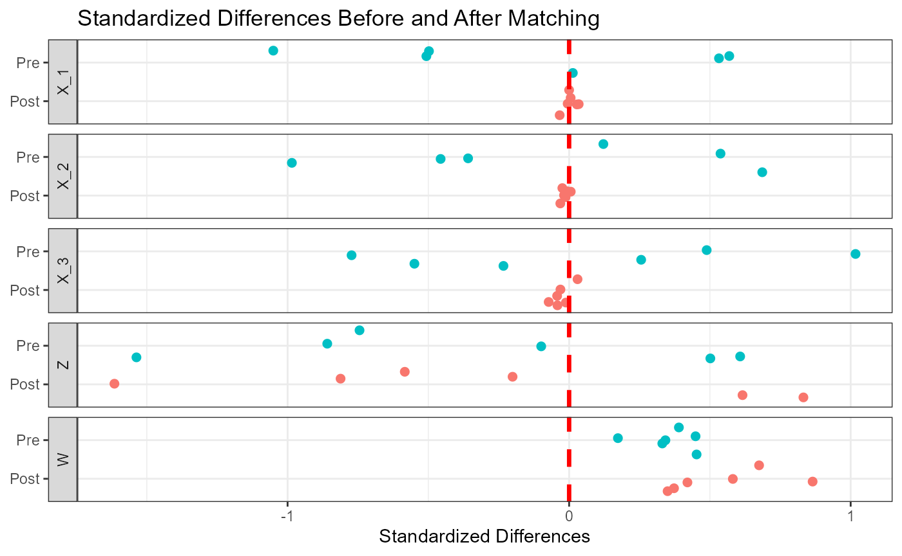
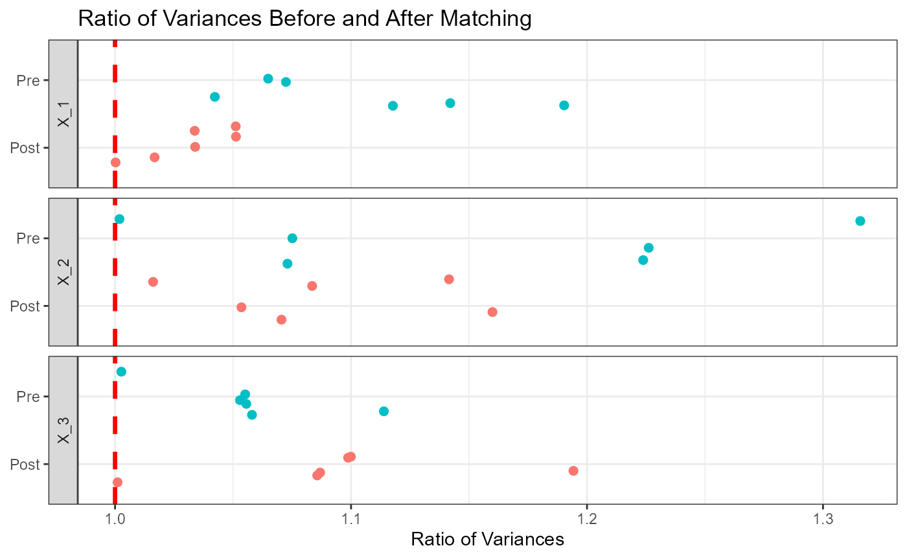
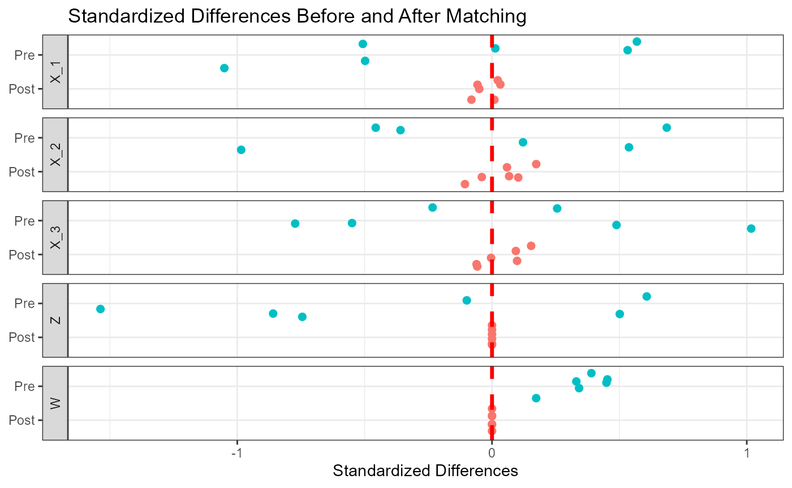

Balance
balance.RmdEvaluating the balance in matched samples
The package polymatching implements also functions to
assess the balance in the variables of interest after matching. Consider
the matched samples generated in the Polymatching tab. The following
code can be used to assess the balance in all of the five variables of
the dataset for the first matched set.
tabBalance_1 <- balance(G ~ X_1 + X_2 + X_3 + Z + W,
match_id = dat$match_id_1,
data = dat)
knitr::kable(head(tabBalance_1, n = 12), digits = 3) | groups | variable | type | stdzDiffPre | ratioVarsPre | stdzDiffPost | ratioVarsPost |
|---|---|---|---|---|---|---|
| A-B | X_1 | continuous | 0.013 | 1.190 | 0.005 | 1.000 |
| A-C | X_1 | continuous | 0.569 | 1.142 | 0.034 | 1.034 |
| A-D | X_1 | continuous | -0.507 | 1.065 | 0.000 | 1.051 |
| B-C | X_1 | continuous | 0.532 | 1.042 | 0.027 | 1.034 |
| B-D | X_1 | continuous | -0.498 | 1.118 | -0.005 | 1.051 |
| C-D | X_1 | continuous | -1.051 | 1.072 | -0.033 | 1.017 |
| A-B | X_2 | continuous | 0.122 | 1.226 | -0.013 | 1.054 |
| A-C | X_2 | continuous | 0.686 | 1.224 | -0.006 | 1.016 |
| A-D | X_2 | continuous | -0.359 | 1.316 | -0.031 | 1.142 |
| B-C | X_2 | continuous | 0.538 | 1.002 | 0.006 | 1.071 |
| B-D | X_2 | continuous | -0.456 | 1.073 | -0.018 | 1.084 |
| C-D | X_2 | continuous | -0.985 | 1.075 | -0.024 | 1.160 |
The table provides the standardized mean differences (SMDs) comparing each pair of groups, before and after matching, in terms of all of the listed variables. For continuous variables, the table also provides the ratio of the variances before and after matching. SMDs less than 10% are generally considered as negligible differences. The table above show that between-group differences have much decreased after matching for all variables that were taken into account in the matching step (, and ). The balance in and , which were not taken into account to generate the first matched sample, is very poor. Plots to graphically show the same outputs can be produced with the following code.
plot_1 <- plotBalance(tabBalance_1,
boxplots = FALSE,
ratioVariances = TRUE)The plots of SMDs and the ratios of variances are distinct elements of the output.
#Standardized mean differences
plot_1$plotStdzDiff
#Ratio of variances
plot_1$plotRatioVars
Notably, when considering the balance of the matched set where the variables and were exactly matched, it is possible to observe a perfect balance in the variables and and a worse balance in the other variables.
tabBalance_3 <- balance(G ~ X_1 + X_2 + X_3 + Z + W,
match_id = dat$match_id_3,
data = dat)
plot_2 <- plotBalance(tabBalance_3,
boxplots = FALSE,
ratioVariances = TRUE)
#Standardized mean differences
plot_2$plotStdzDiff